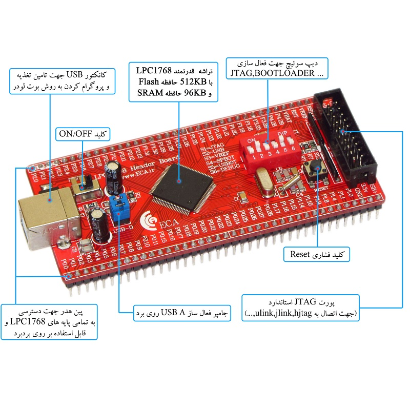
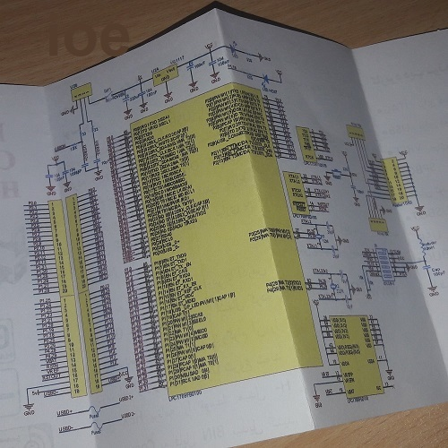
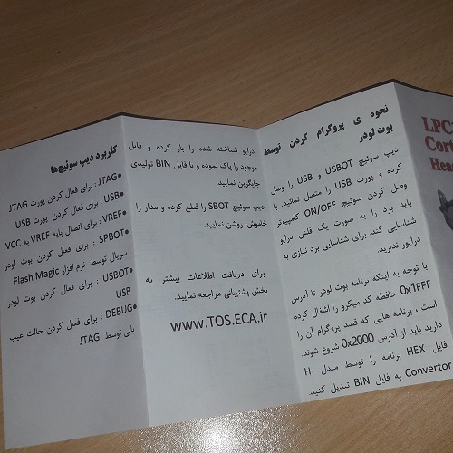
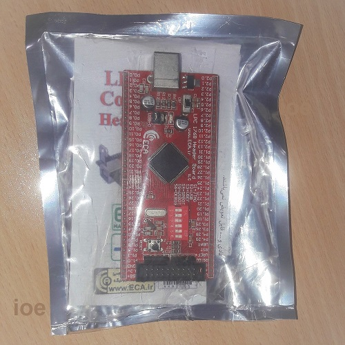
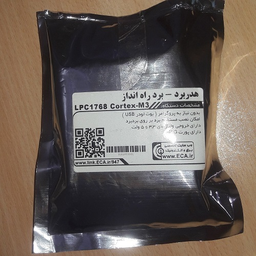
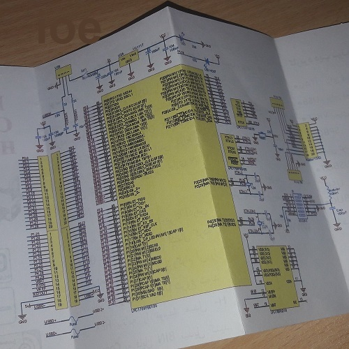
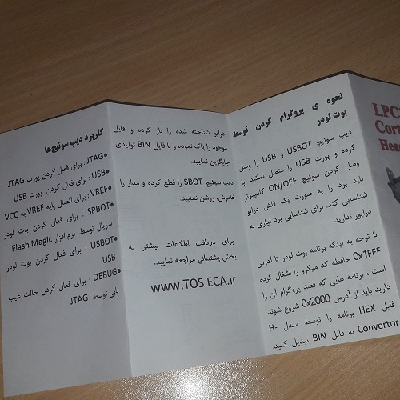
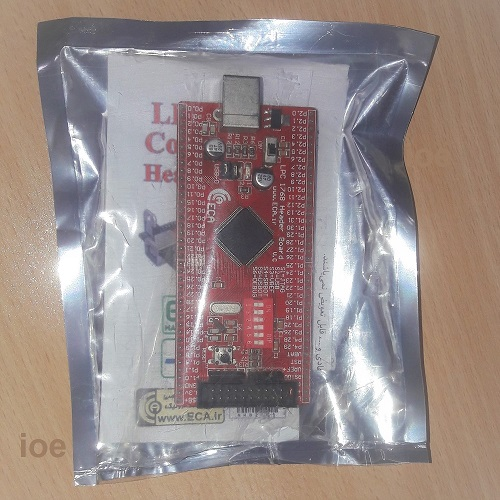
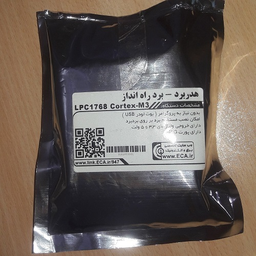

هدر برد LPC1768

قیمت: 500,000 تومان
هدر برد LPC1768
قابلیت ها
- حداقل مدار جهت راه اندازی میکروکنترولر LPC1768
- بدون نیاز به پروگرامر مجهز به بوت لودرUSB
- دارای خروجی تمام پایه های ورودی خروجی به ترتیب شمارشی
- داراي کانکتور full speed USB 2.0
- امکان نصب مستقیم برد بر روی بردبرد
- دارای خروجی ولتاژهای 3.3 و 5 ولت
- دارای کلید قطع و وصل تغذیه
- امکان فعال و غیر فعال کردن پورت های تمامی امکانات جانبی میکرو، از قبیل USB ، JTAG ، DEBUG ، VREF و ...
- داری خروجی کانکتور JTAG استاندارد
- کریستال 32.768KHZ برای راه اندازی RTC داخلی
اطلاعات
اطلاعات بیشتر
هدربرد (برد راه انداز) میکروکنترلرهای CORTEX M3 با امکانات اولیه جهت کار با میکروکنترلرهای LPC1768 شرکت فیلیپس. با توجه به 100 پایه بودن میکرو، دو ردیف پین هدر در اطراف برد قرار گرفته که بر روی 2 بردبرد چسبیده به هم قابل قرارگیری است. از دیگر مزایای این برد راه انداز، تأمین ولتاژ مورد نیاز میکرو از طریق پورت USB به همراه کلید قطع وصل می باشد . یکی از امکانات ویژه این برد قابلیت پروگرام نمودن میکرو از طریق پورت USB می باشد. در این روش شما هیچ احتیاجی به سخت افزار خاصی نداشته و فقط از طریق وصل نمودن کابل USB به رایانه می توانید میکروکنترلر را پروگرام نمایید. جهت پروگرام کردن این میکرو می توانید از 2 طریق ارتباط پورتUSB و یا پورت JTAG اقدام نمایید .
تصاویر بیشتر








